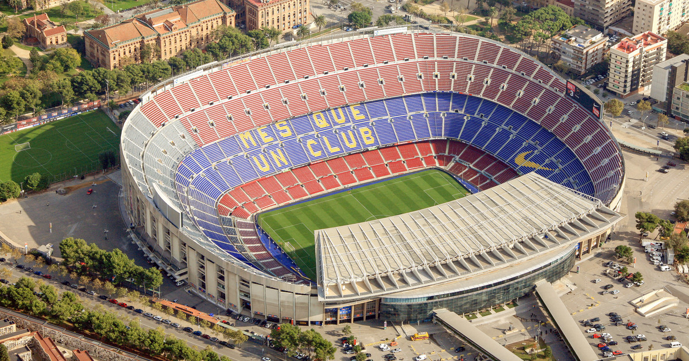
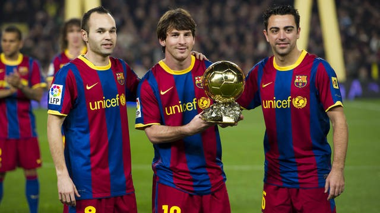
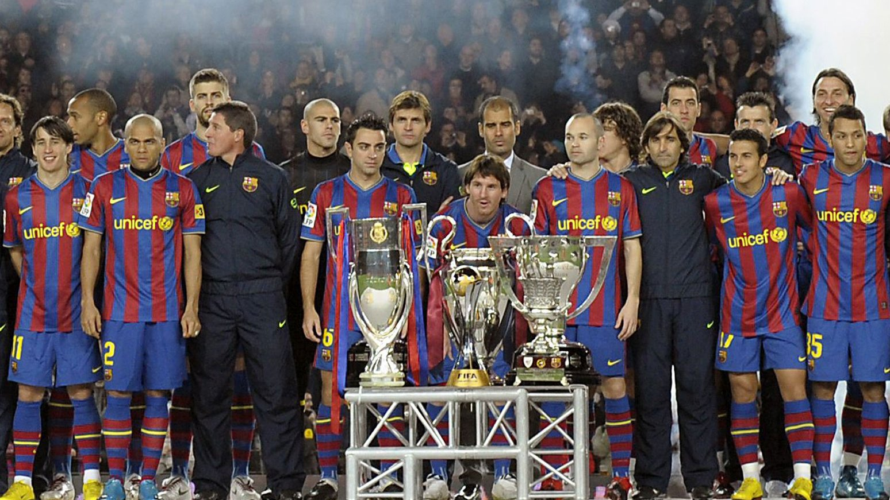
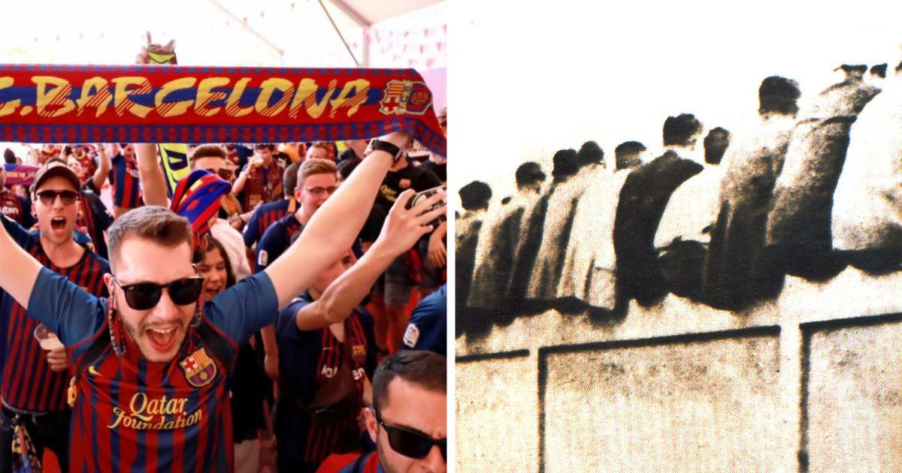
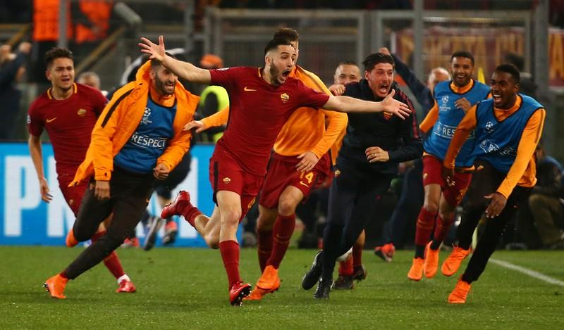
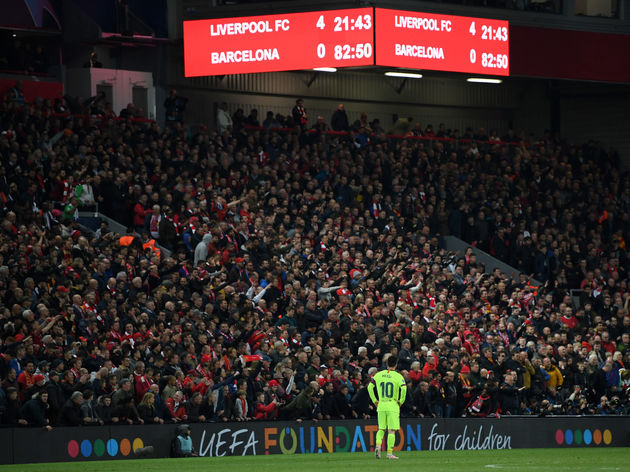
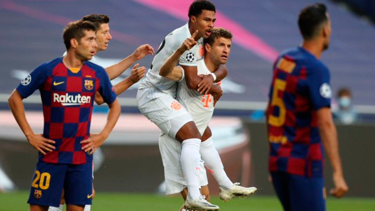

Curiosidades sobre o FC Barcelona
O clube vem ganhando muitos fãs ao decorrer dos últimos anos, cada vez mais torcedores estão
ligados ao que acontece na equipe catalã. Porém, existem alguns fatos que nem
todo torcedor conhece sobre o time, dessa forma iremos citar algumas curiosidades sobre
o clube que completou 121 anos na última semana.
O Estádio: Camp Nou
Talvez você não saiba mas, o Camp nou é o maior estádio na Europa, com capacidade para
99.354 mil pessoas, e conta com um projeto de ampliação do estádio e com custo total
maior que R$ 3 bilhões de reais, o novo Camp Nou contará com uma
capacidade de até 105 mil pessoas, até 2024.

Leia mais
Slogan: Més que un club
Para o português "Mais que um clube", ao entrar no Camp Nou, nas arquibancadas a frase Més que
un club pode ser lida em letras amarelas sobre o fundo azul na área central. Todo mundo sabe
que esse é seu bordão, mas você sabe a origem da frase?
Há 50 anos, dizia-se pela primeira vez que se referia ao Barcelona. Narcis de Carreras,
quando eleito presidente do Barça, disse que é mais do que um clube, mais do que um local
para se divertir, um espírito que existe em todos os adeptos, A frase que move o
Barcelona não se aplica apenas a atitudes fora de campo. Dentro dele, os jogadores
transpiram o sentido de ser mais do que um clube de futebol. É uma união, uma família,
um espetáculo, e algo fora de qualquer propósito visto no sentido de se jogar futebol
pelo menos nas últimas décadas.
Finalistas Bola de Ouro
Na temporada 2009/10, o Barcelona proporcionou algo inédito na história do clube e do futebol,
quando na premiação dos finalistas da Bola de Ouro da Fifa, contou com os três jogadores do
clube: Messi, Iniesta e Xavi, nunca foi visto algo assim, o ganhador foi Lionel Messi, que
naquele ano faturou a sua segunda bola de ouro da carreira.

"Bicho-Papão" da Europa
Ninguém pôde parar o Barcelona na temporada 2009/10 que acabou conquistando tudo que disputou no mesmo
ano, algo inédito foi a única equipe do mundo a conquistar 6 títulos (sexteto) em um ano (2009):
Campeonato espanhol, Copa do Rey, Liga dos Campeões, Supercopa da Espanha, Supercopa
da Europa e Mundial de Clubes. também é a única equipe do mundo com duas Tríplices Coroas. Ou seja,
o único clube que conseguiu vencer os três principais títulos disputados em uma única temporada:
Campeonato espanhol, Copa do Rey e Liga dos Campeões. A primeira tríplice veio na temporada 2008/09
com Pep Guardiola e a segunda, na temporada 2014/15 com Luís Enrique e o letal trio de ataque MSN,
Messi, Suárez e Neymar.

O Apelido: Culés
O apelido “culé” vem do espanhol “culo” que significa bumbum, tem uma origem tanto quanto cômica,
isso porque no inicio do Barcelona, os torcedores sentavam nas arquibancadas que não possuiam
cobertura e então era possível que quem passasse pelo estádio, visse os torcedores sentados
e seus bumbuns.

O jogador com mais partidas
O jogador com o maior número de partidas oficiais com a camisa do Barcelona é o espanhol Xavi Hernández,
um grande ídolo e que marcou época tanto no clube e em sua seleção, pelo Barça fez um total de 767 partidas,
seguido por Andrés Iniesta com 674 jogos disputados pelo Barcelona, a têndencia e que Lionel Messi, ultrapasse
Xavi, já que possui 731 partidas (atualmente) e tem planos de encerrar a carreira no clube catalão.
Maiores goleadas em competições européias
Em casa: Barcelona 8x0 Apollon Limassol (Chipre), Recopa, em 15/09/1982; Barcelona 8x0 Matador Púchov
(Eslovaquia), Copa da UEFA - 15/10/2003.
Fora de casa: Hapoel Beer Sheva (Israel) 0x7 FC Barcelona (Copa de la UEFA, 12/09/1995).
Maiores vexames
O Barcelona não vive somente de glórias e lindas histórias para contar,ao longo de sua existência sofreu
algumas derrotas que ficaram marcadas em sua história.
A maior derrota do Barcelona ocorre há 90 anos atrás, na temporada 1930/1931, quando foi
derrotado por 12 a 1 para o Athletic de Bilbao,em partida válida pelo Campeonato Espanhol.
Recentemente

Roma
Temporada 2017/18 para a Roma (Itália), placar agregado Barcelona 4 x 4 Roma, Roma se classifica pelo critério de desempate de gols fora de casa.

Anfield
Temporada 2018/19 para o Liverpool (Inglaterra), placar agregado Barcelona 3 x 4 Liverpool.

Lisboa
Temporada 2019/20 para o Bayern de Munique (Alemanha), placar de Barcelona 2 x 8 Bayern.
Na temporada 2016/17, após golearem PSG por 6 a 1 no Camp Nou nas oitavas de final do
torneio,e proporcionarem uma das noites mais mágicas da história da Liga dos campeões,
revertendo o placar de 4-0 na ida, na fase seguinte não conseguiram repetir o feito diante
da Juventus, vindo a serem goleados pelo placar de 3 a 0, que eliminou o gigante espanhol
da competição
Mais um vexame na Champions League, na temporada 2017/18 agora para a Roma. Depois de golear o time italiano
no Camp Nou pelo placar de 4 a 1 no mata-mata, no jogo da volta na Itália acabou sendo
derrotado pelo placar de 3 a 0 e mais uma vez deu adeus a maior competição do continente.
Novamente na temporada 2018/19, o time decepcionou nas fases eliminatórias da Liga dos
campeões, dessa vez contra um time inglês o Liverpool, após ganhar o jogo de ida por
3 x 0 no Camp Nou o Barcelona acabou cedendo a virada e perdeu na volta em Anfield
na Inglaterra pelo placar de 4 x 0, sendo eliminado mas uma vez, após ter uma boa
vantagem no placar de ida.
Por fim, e concerteza a maior humilhação sofrida pelo Barcelona em noites de
Liga dos Campeões foi na última temporada em 2019/20, em jogo único válido
de quartas de finais, o adversário era o gigante alemão Bayern de Munique,
se esperava um jogo bastante equílibrado pelo peso das duas camisas, apesar
de um leve favoritismo dos alemães, o jogo acabou terminando em um histórico
placar de 8 x 2 para o time alemão, um jogo que concerteza o torcedor
blaugrana quer apagar de sua memória.